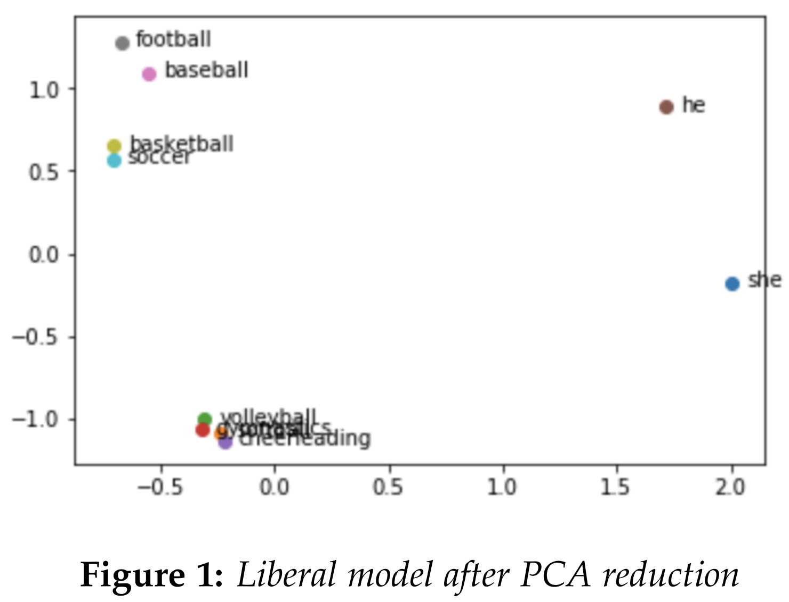
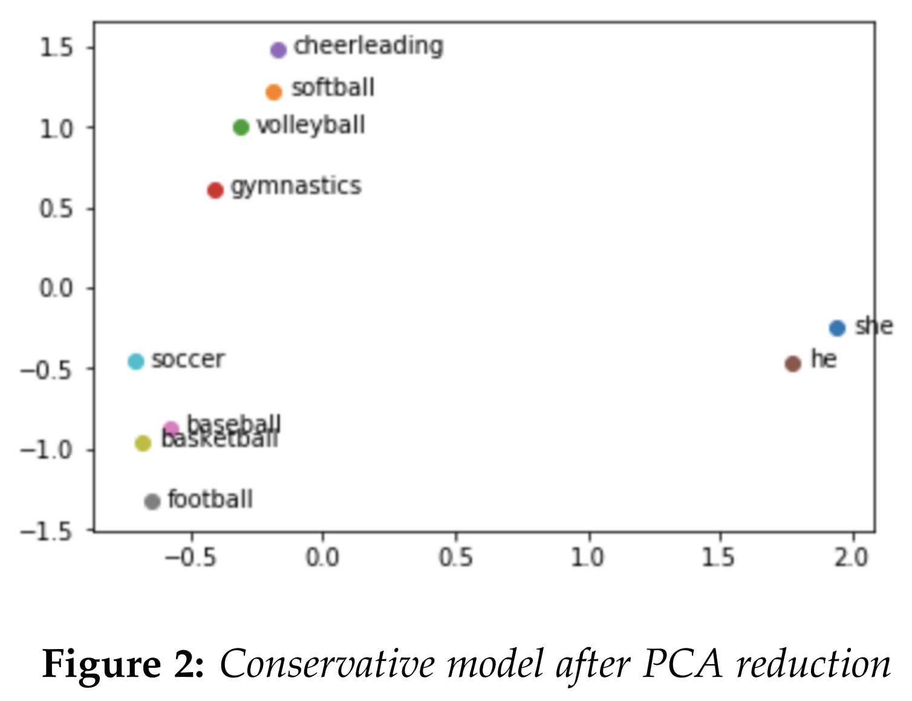
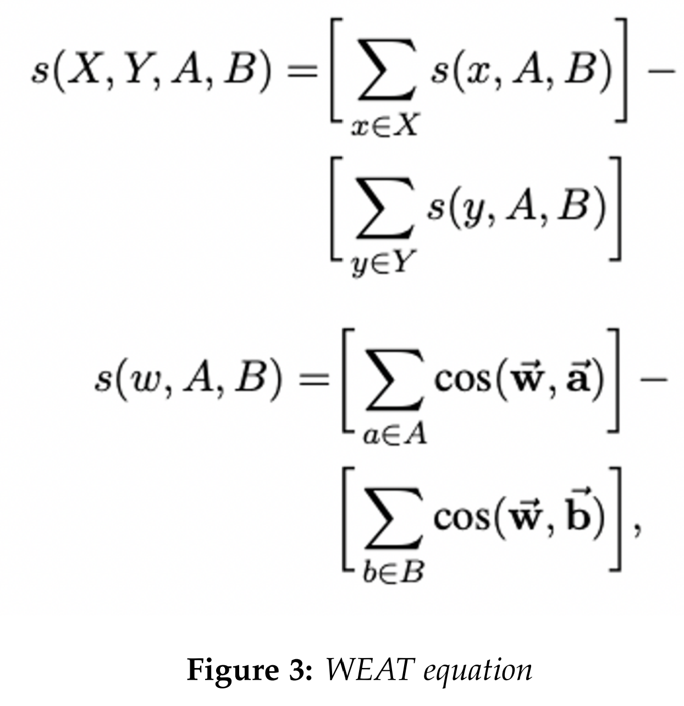
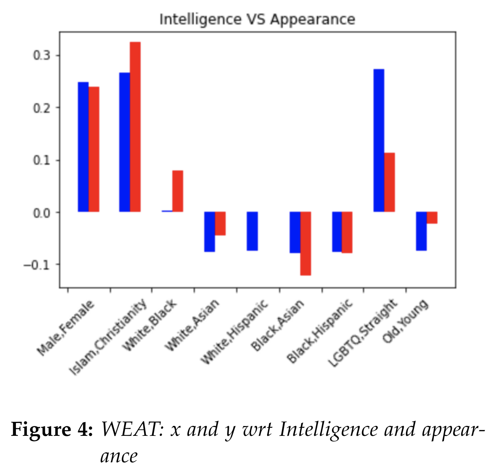
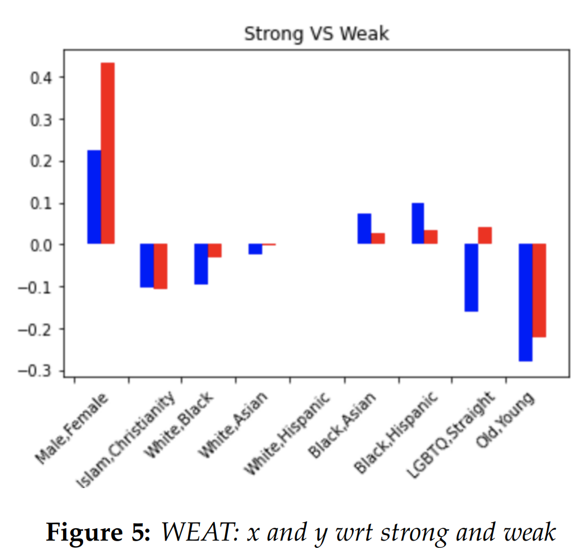
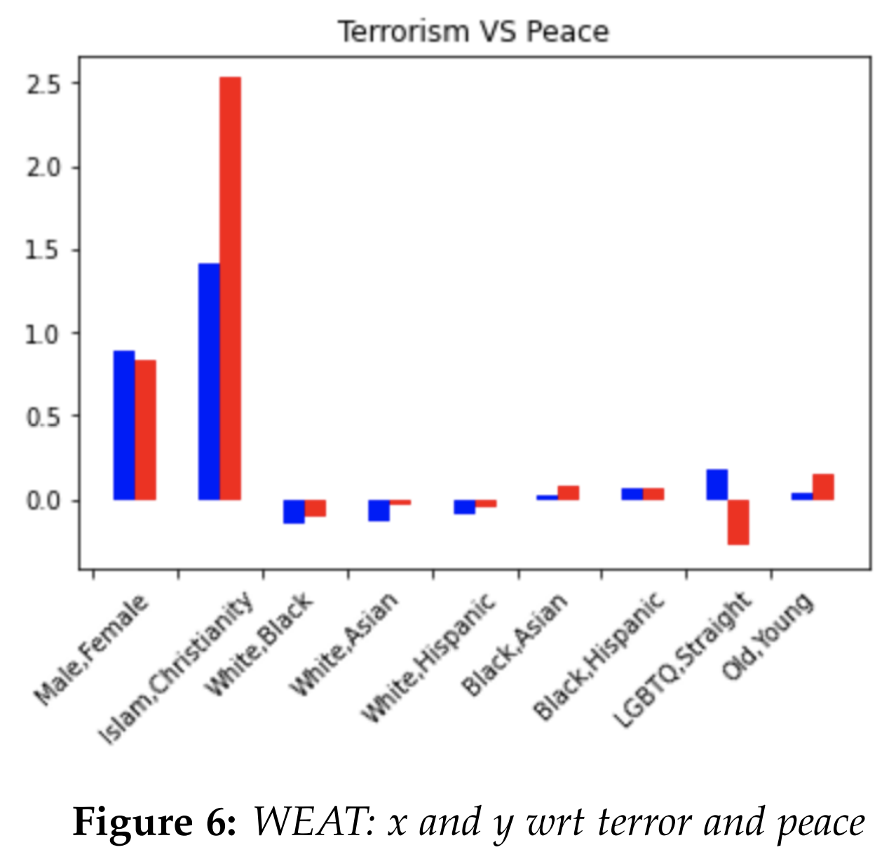
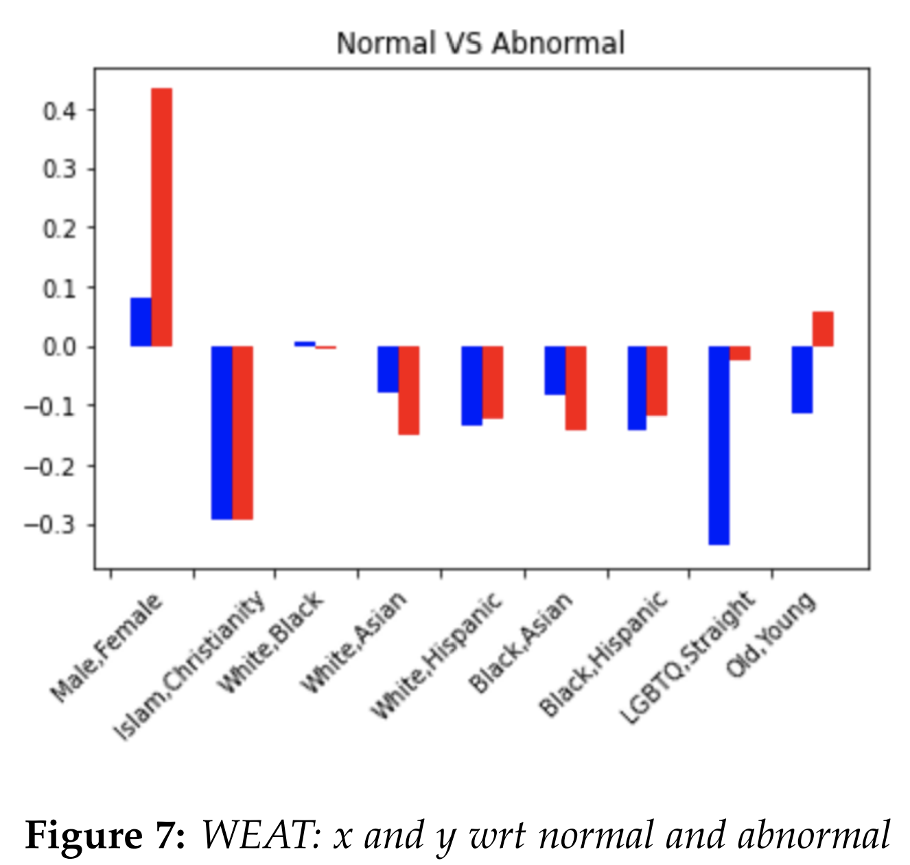

<!DOCTYPE html>
<html lang="en">
<head>
    <meta charset="UTF-8">
    <title>Surveying Bias in Word Embeddings of Political News Media Dataset | CS 547 Information Retrieval</title>
    <link rel="stylesheet" href="css/style.css">

    <script
            src="https://code.jquery.com/jquery-3.5.1.js"
            integrity="sha256-QWo7LDvxbWT2tbbQ97B53yJnYU3WhH/C8ycbRAkjPDc="
            crossorigin="anonymous"></script>
    <script src="https://cdn.jsdelivr.net/npm/popper.js@1.16.0/dist/umd/popper.min.js" integrity="sha384-Q6E9RHvbIyZFJoft+2mJbHaEWldlvI9IOYy5n3zV9zzTtmI3UksdQRVvoxMfooAo" crossorigin="anonymous"></script>
    <script src="https://stackpath.bootstrapcdn.com/bootstrap/4.4.1/js/bootstrap.min.js" integrity="sha384-wfSDF2E50Y2D1uUdj0O3uMBJnjuUD4Ih7YwaYd1iqfktj0Uod8GCExl3Og8ifwB6" crossorigin="anonymous"></script>
    <link rel="stylesheet" type="text/css" href="https://cdnjs.cloudflare.com/ajax/libs/jqueryui/1.12.1/jquery-ui.css">
    <script src="https://cdnjs.cloudflare.com/ajax/libs/jqueryui/1.12.1/jquery-ui.min.js"></script>
    <script>
        $(document).ready(function() {
            $('.component-wrapper').on("click", function (){

                $('.component-wrapper').removeClass('active');
                $('.component-wrapper').addClass('inactive');

                $(this).removeClass('inactive');
                $(this).addClass('active');
            });

            $(".nav-a").click(function(e) {
                e.preventDefault();
                var section = $(this).attr("href");
                $("html, body").animate({
                    scrollTop: $(section).offset().top - 70
                });
            });
        });
    </script>

</head>

<body>

<div class="header">
    <div class="header-text">CS 547 : Information Retrieval</div>
    <div class="right-image">
        <div class="image">
            
        </div>
        <div class="image-caption">Worcester Polytechnic Institute</div>
    </div>
</div>

<div class="content-wrapper">
    <div class="sidebar">
        <div class="sidebar-wrapper">
            <div class="top-menu">
                <div class="authors">
                    <div class="sub-author">Donghyuk Kim</div>
                    <div class="sub-author">Yunyao Wu</div>
                    <div class="sub-author">Pichayut Ter Liamthong</div>
                </div>
                <div class="top-btn">
                    <a href="https://colab.research.google.com/drive/1S5K67Ho83Ask-LoZfTJDfkqewHfVfHD-?usp=sharing" target="_blank">
                        
                    </a>
                </div>
                <div class="top-btn">
                    <a href="https://github.com/pichayutter/pichayutter.github.io" target="_blank">
                        
                    </a>
                </div>
            </div>
            <a class="nav-a" href="#introduction">
                <div class="component-wrapper active">
                    <div class="component">Introduction</div>
                    <div class="component-circle"></div>
                </div>
            </a>
            <a class="nav-a" href="#dataset">
                <div class="component-wrapper inactive">
                    <div class="component">Dataset</div>
                    <div class="component-circle"></div>
                </div>
            </a>
            <a class="nav-a" href="#methods">
                <div class="component-wrapper inactive">
                    <div class="component">Methods and Experiments</div>
                    <div class="component-circle"></div>
                </div>
            </a>
            <a class="nav-a" href="#conclusion">
                <div class="component-wrapper inactive">
                    <div class="component">Conclusion</div>
                    <div class="component-circle"></div>
                </div>
            </a>
            <a class="nav-a" href="#ref">
                <div class="component-wrapper inactive">
                    <div class="component">References</div>
                    <div class="component-circle"></div>
                </div>
            </a>
        </div>
    </div>
    <div class="content">
        <div class="title">
            Surveying Bias in Word Embeddings of Political News Media Dataset
        </div>
        <div class="section">
            <i>In recent years, there has been an increasing academic and public interest in the field of AI fairness. One
            popular area of study is word embedding bias. Many studies have demonstrated the presence of bias in word
            embedding models that reflect the implicit social bias encoded in the text dataset. For instance, Bolukbasi [1]
            found concerning gender biases from analogy tasks using a model built with Google News Dataset. In this
            project, we question whether the political leanings of the news article sources play any factor in the bias. We
            survey different types of social bias found in two models: one built with a corpus of “liberal” articles, and the
            other built with a corpus of “conservative” articles.</i>
        </div>
        <div class="main-image">
            <!---->
            
        <div/>
        <div class="section" id="introduction">
            <div class="section-header">Introduction</div>
            <div class="section-content">
                In this section, we hope to provide more
background on our task. Word embedding
is a term used for a learned representation
of text data that encodes word semantics in the
form of real-valued vectors. Consider the sentences “I am going to the shop to get eggs” and
“I am going to the store to get eggs.” The words
“shop” and “store” share similar meanings
because they share similar neighboring words,
and word embedding models aim to capture
such relationships. Ideally, the word vectors for “shop” and “store” would have high
similarity using measures like cosine similarity.
Using the learned vectors, one can also
perform arithmetic like “king” – “man” +
“woman” to output a vector that will be most
similar to the vector that represents the word
“queen”. This is an example of an analogy task
that can be read “man is to a king as woman is
to a queen.” Word embeddings are often used
to enhance various machine learning and NLP
tasks.
Although word embedding’s ability to
capture semantics is powerful, it often contains
many biases. For instance, the paper “Man
is to Computer Programmer as Woman is to
Homemaker? Debiasing Word Embeddings”
[1] found concerning gender biases from
analogy tasks using a model built with Google
News Dataset. Given that entities like occupations are neutral, we hope the model wouldn’t
distinguish them based on protected attributes
like gender. However, the text data used to
train the model may contain implicit human
bias because historically some occupations,
for instance, have been more male-dominant
and others more female-dominant. Blind
application of word embedding models can
lead to serious consequences like reinforcing
and amplifying harmful social stereotypes. In
this project, we question whether the political
leanings of the news article sources play any
factor in the bias. We survey different types of
social bias found in two models: one built with
a corpus of “liberal” articles, and the other
built with a corpus of “conservative” articles
            </div>
        </div>
        <div class="section" id="dataset">
            <div class="section-header">Dataset</div>
            <div class="section-content">
                We processed two corpora, one made of
news articles from “liberal” media and
the other from “conservative” media [2][3].
The liberal corpus consists of 30000 articles
1from CNN, 30000 articles from Washington
Post, and 30000 articles from Buzzfeed News.
The conservative corpus consists of 12229
articles from Fox News, 30000 articles from
Breitbart, 30000 articles from New York Post.
The majority of articles from both sides are
from the year range 2016 to 2020. We got our
dataset from Components, a publication and
research group.
We faced few challenges building our corpora for this project. In our project proposal,
we intended to perform diachronic word
embeddings analysis to examine the shift in
bias over time. However, we did not have
the resources to gather a large amount of
liberal and conservative news articles from
older dates. Second, we noticed that much
of the publicly available media-specific news
datasets are of “liberal” sources, and not much
from “conservative” sources. Finally, we are
aware of the limitations of our representation
of “liberal” and “conservative” news, as we
only have 3 media sources from each side.
In addition, not all articles and authors are
politically motivated. Still, we believe it will
be interesting to examine if there exists any
difference between media that are publicly
conceived as “liberal” or “conservative.”
            </div>
        </div>

        <div class="section" id="methods">
            <div class="section-header">Methods and Experiments</div>
            <div class="section-content">
                For building our word embedding models,
we used the Word2vec algorithm utilizing
the python library gensim. For preprocessing
our corpora, we lower-cased all words and
utilized NLTK library to tokenize them into
sentences of word tokens that are required by
gensim. We chose 200 as the dimensionality
of word vectors as the convention is between
100 and 300, and we ignored words with a
frequency less than 5.
<br/><br/>
Initially, we attempted to explore bias in the
models by hand-picking several examples to
compare cosine similarities or analogies. For
instance, the famous analogy "man is to a doctor as woman is to a nurse" was replicated in
both liberal and conservative models. We also
tried performing PCA dimensionality reduction to visualize the existence of bias in the
models. We graphed sports that are stereotypically associated with either males or females,
along with the words "he" and "she." The words
we used for "male sports" were [football, baseball, basketball, soccer], and words we used
for "female sports" were [cheerleading, softball,
volleyball, gymnastics]. Both the conservative
and liberal models exhibited a similar result.
The fact that one could draw a line to divide
stereotypically male sports like "football" along
with the term "he", and stereotypically female
sports like "cheerleading" along with the term
"she", hinted at a possibility of bias in both
models.
<br/><br/>


To give a more comprehensive measurement
of bias in the word embedding models, we
used the Word Embedding Association Test
2(WEAT) proposed by Caliskan [6]. The WEAT
aims to detect implicit bias by measuring the
association between two sets of target concepts
and two sets of attributes. For instance,
suppose we are interested in quantifying
gender bias in arts and science. The attributes
would be a set of words that describe “male”,
such as “male”, “man”, “boy”, “brother”,
“he”, “him”, his”,... , and a set of words
that describe “female”, such as “female”,
“woman”, “girl”, “sister”, “she”, “her”, .....
For the target concepts, we are inspecting arts
and science, so a set of words for arts may
be “poetry”, “art”, “Shakespeare”, “dance”,
“literature”, . . . and a set of words for science
may be “science”, “technology”, “physics”,
“chemistry”, “NASA”, . . . .. In essence, the
WEAT tries to give a summary of whether
male-related terms are more related to science
than female terms (i.e whether female-related
terms are more related to arts than male
terms). Formally, the calculations are done
with the equation in the figure below, which
we borrowed from [4].

X,Y refer to the target sets, such as arts and
science, while A,B refer to the attributes like
male and female. For each word in the target
sets X and Y like "literature" vs "chemistry",
we compute s(w, A, B), and compare the
difference of sum. s(w, A, B) is calculated by
comparing the cosine similarity of the target
word with each word from the attribute set
like "boy" vs "girl" and taking the difference
of the sum. In reality, the calculation of the
formula is normalized using effect size, but we
leave the detail out in this report. The values
typically range from -2 to 2, where 0 indicates
the absence of bias. In the formulation of X, Y,
A, B, a positive value indicates that X is closer
to A (i.e. Y is closer to B ). A negative value
indicates that X is closer to B (i.e. Y is closer to
A)
<br/><br/>
We used the python library wefe (The Word
Embedding Fairness Evaluation Framework)
for calculating WEAT [7]. For our analysis, we
tested the following attribute set pairs: (male,
female), (islam, christianity), (white, black),
(white, asian), (LGBTQ, straight), and (old,
young). For the neutral terms, we tested the
following target set pairs (strong vs weak), (terrorism, peace), (normal, abnormal), and (intelligence, appearance). The words in each of the
target or attribute sets were either borrowed
from other studies [4][6], or they were curated
by us. The exact list of words in each set can
be found in our code. We graphed our results.

The blue line refers to the liberal model,
and the red line refers to the conservative
model. For interpretation, consider figure 4.


Comparing "male and female" with respect to
"intelligence and appearance", both the liberal
and conservative model gave a similar positive
WEAT score, indicating that male terms are
closer to intelligence terms (i.e. female terms
are closer to appearance terms).

In general, the degree of bias or the absence
of bias were similar between liberal and
conservative models. Still, there were couple of
analogies where we could see some difference.
For instance, Consider the normal vs abnormal
graph. Normal terms include words like
"natural", "right", "normal", while abnormal
terms include terms like "weird", "abnormal",
"wrong". For male and female pair, the
conservative model had a much higher score,
suggesting that male is closer to normal, and
female is closer to abnormal. On the other
hand, for LGBTQ and straight, the liberal had
a much more negative score, suggesting that
LGBTQ is closer to abnormal, and straight is
closer to normal. Another noticeable result
was Islam and Christianity with respect to
terrorism and peace. The conservative model
was much more biased in associating Islam
with terrorism and Christianity with peace.
The limitation of the WEAT score is that it
cannot be interpreted directly. Like the cosine similarity, it is only a comparison measure.

            </div>
        </div>

        <div class="section" id="conclusion">
            <div class="section-header">Conclusion</div>
            <div class="section-content">
                In this project, we used the WEAT method as
a primary tool to diagnose bias. We found
that the degree of bias was generally similar between liberal and conservative models, though
there were noticeable differences in some comparisons. We also found bias in our models
with analogies like "man is to a doctor as a
woman is to a nurse."
We would like to note using analogies
for bias detection is challenged by some researchers. For instance, one study makes the
following argument: if we make the analogy
man is to computer programmer as woman is
4to x, is there a correct output for x? In the traditional analogy task A:B :: C: D, all four terms
are forced to be distinct. Therefore, forcing the
fourth term to be different from the second can
be problematic. In addition, the scope of attribute and target terms we used for WEAT is
also limited as well as hand-picked by humans,
so it is difficult to make a comprehensive comment regarding bias in word embeddings. This
goes to show that the area of AI fairness still
has a lot to be explored
            </div>
        </div>

        <div class="section" id="ref">
            <div class="section-header">References</div>
            <div class="section-content">
                [1] Bolukbasi, T., Chang, K.-W., Zou, J.,
                Saligrama, V., and Kalai, A. (2016). Man
                is to computer programmer as woman is
                to homemaker? debiasing word embeddings. arXiv preprint arXiv:1607.06520.
                <br/><br/>
                [2] 2.7 million news articles and essays
                https://components.one/datasets/all-the-news-2-news-articles-dataset/
                <br/><br/>
                [3] All the news 143,000 articles
                from 15 American publications
                https://www.kaggle.com/snapcrack/all-the-news
                <br/><br/>
                [4] Anthony Rios, Reenam Joshi, and Hejin
                Shin. 2020. Quantifying 60 years of gender
                bias in biomedical research with word embeddings. In Proceedings of 44 the 19th
                SIGBioMed Workshop on Biomedical Language Processing, pages 1–13, Online. Association for Computational Linguistics.
                <br/><br/>
                [5] Malvina Nissim, Rik van Noord, and Rob
                van der Goot. Fair is better than sensational: Man is to doctor as woman is to
                doctor. arXiv preprint arXiv:1905.09866,
                2019.
                <br/><br/>
                [6] A. Caliskan, J. J. Bryson, and A.
                Narayanan. Semantics derived automatically from language corpora
                contain humanlike biases. Science,
                356(6334):183–186, 2017.
                <br/><br/>
                [7] P. Badilla, F. Bravo-Marquez, and J. Pérez
                WEFE: The Word Embeddings Fairness
                Evaluation Framework In Proceedings of
                the 29th International Joint Conference on
                Artificial Intelligence and the 17th Pacific
                Rim International Conference on Artificial
                Intelligence (IJCAI-PRICAI 2020), Yokohama, Japan.

            </div>
        </div>
    </div>
</div>


</body>
</html>
